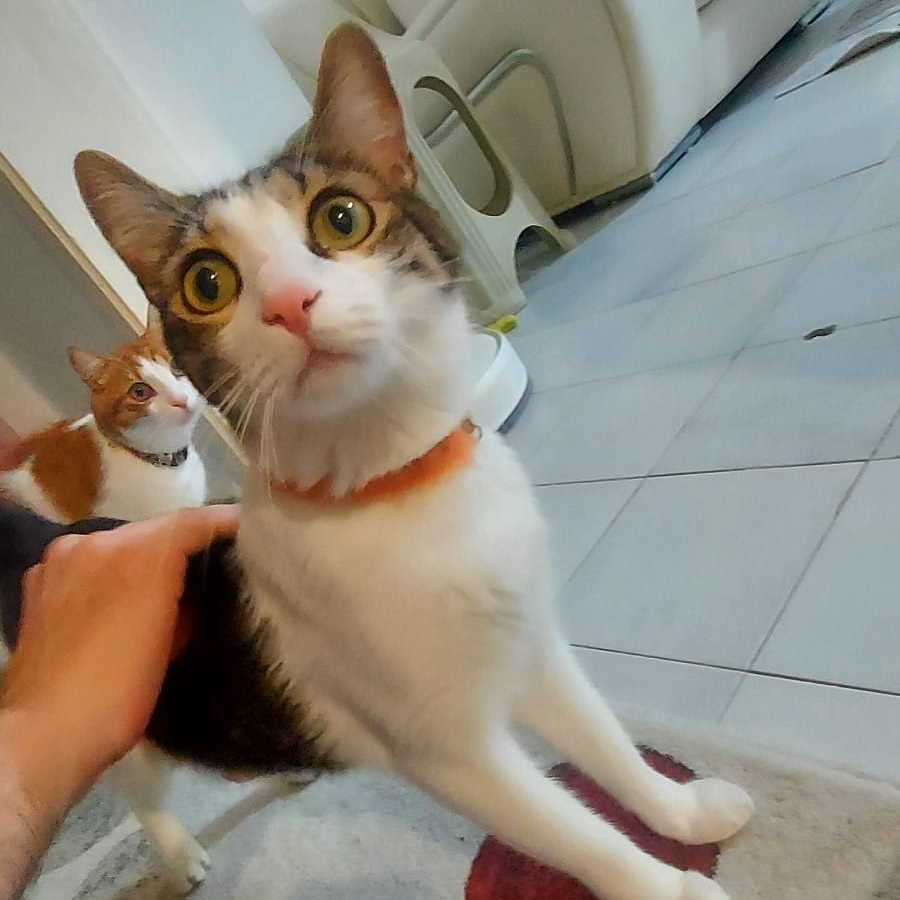

Koruma Devre Dışı! Sisteminiz aktif tehditlerden korunmuyor. Korumayı yeniden aktifleştirmek için düğmeyi kullanın.
Koruma Devre Dışı! Sisteminiz aktif tehditlerden korunmuyor. Korumayı yeniden aktifleştirmek için düğmeyi kullanın.
Mükemmel Güvenlik
Sisteminiz tam koruma altında. Tespit edilen 1 küçük öneri var.
Canlı Tehdit Termal Haritası
Portlar, I/O kanalları ve bellek sektörleri ısı indeksiCanlı İzleme
Masaüstü taranıyor...

Quantum Oyun Modu
Bildirimleri susturur, FPS artırır.
Sıfır İz Mühürleme
DNS ve tarayıcı izleri
Pano Güvenliği
Kripto & URL hijacking koruması
Haftalık Güvenlik Zaman Çizelgesi
Son 7 günde engellenen 18 siber girişimSOVEREIGN SAVUNMA MATRİSİ
Sovereign SafePay
Bankacılık işlemleri izole ediliyor
Anti-Mining Kalkanı
CPU Yükü: %0 (Normal)
Güvenlik Duvarı
Gelen/Giden trafik filtreleniyor
Fidye Yazılım Avcısı
Kritik dosyalar mühürlendi
Fidye Yazılımı Canarya Tuzağı (Honeypot Trap)
Sistem klasörlerine yerleştirilen tuzak yem dosyaları sayesinde şifreleme girişimleri milisaniyeler içinde dondurulur.
Desktop\invoice_2026.docx
Documents\passwords_backup.xlsx
Pictures\family_archive.dat
AppData\vault_keys.bin
Tarama Operasyonları
 Karantina Kasası (Sovereign Vault)
Karantina Kasası (Sovereign Vault)
Tespit edilen zararlı yazılımlar sisteminizden izole edilip AES-256 ile şifreli kasada saklanır.
İzole Edilmiş Tehdit Kasası
Kasada 3 izole edilmiş dosya bulunuyor. Bu dosyalar çalıştırılamaz ve sisteme zarar veremez.
Manuel Dosya İzolasyonu
Şüpheli bir dosyayı doğrudan karantinaya kilitlemek için tıklayın veya sürükleyin
Trojan.Win32.Memz.Payload
C:\Users\user\Downloads\calc_patch.exe
İzolasyon: 16.09.2026 18:22 • SHA256: 4f82a1b9c...
Heuristic.Script.Dropper.js
C:\Users\user\AppData\Local\Temp\update_payload.js
İzolasyon: 16.09.2026 19:04 • SHA256: a8c2e71d0... Sistem Temizleyici ve Disk Alanı Kurtarıcı
Sistem Temizleyici ve Disk Alanı Kurtarıcı
Gereksiz sistem kalıntılarını, önbellekleri ve geçici dosyaları temizleyerek disk alanı kazanın.
Tahmini Kurtarılabilir Alan: 3.42 GB
Sisteminizdeki 5 ayrı kategoride biriken kalıntılar temizlenmeye hazır.
Windows Geçici Dosyaları
1.45 GB Kalıntı

Tarayıcı Önbelleği & Çerezler
890 MB Kalıntı

Çökme & Bellek Dökümleri
620 MB Kalıntı
Geri Dönüşüm Kutusu
460 MB Kalıntı
Derin Gizlilik & Sıfır İz Mühürleme (Privacy Flush)
DNS çözümleme önbelleğini sıfırlar, Windows son erişilen dosyalarını temizler ve tarayıcı izleme kırıntılarını yok eder.
 Ağ Analizi ve Wi-Fi Kulesi
Ağ Analizi ve Wi-Fi Kulesi
Aktif ağ bağdaştırıcıları, yerel ağdaki cihazlar ve canlı bant genişliği telemetrisi.
Bağlantı: Yükleniyor...
Yerel IP: -- • MAC: -- • Host: --


Huawei WiFi 6 Gateway (Yönlendirici)
192.168.1.1 • MAC: 00:E0:4C:12:34:56
Bu Bilgisayar (Windows 11 Sovereign Host)
192.168.1.105 • MAC: F8:75:A4:91:20:EE
Web Kalkanı
Canlı Site Analizi
Şüpheli web sitelerini girmeden önce tarayın. Phishing ve dolandırıcılık tespiti yapar.
Sistem Geneli HOSTS Kalkanı
Zararlı siteleri Windows seviyesinde tamamen engeller. Bu işlem yönetici izni gerektirebilir.
Canlı Küresel Siber Tehdit Haritası
SPACE Security Labs küresel bulut istihbaratı ve canlı botnet saldırı akışı
Güvenli Tarayıcı (Safe Browser)
İzole edilmiş sandbox ortamında zararlı sitelerden ve kimlik avından korunarak web'de gezinin.
SPACEGuard Güvenli Tarayıcı Sandbox
Çerezler, zararlı betikler ve izleyiciler ana sisteminizden tamamen izole edilir.
Sandbox İzolasyonu ve Antivirüs Sezgisel Kalkanı Aktif
Başlangıç Yöneticisi
Windows açılışında otomatik başlayan programları yönetin ve açılış süresini hızlandırın.
Açılış Performansı Etkisi: Optimize Edildi
6 başlangıç uygulaması izleniyor. Gereksiz uygulamalar kapatılarak 4.2 saniye hız kazanıldı.
Discord
Discord Inc. • Başlangıç Gecikmesi: 30sn
Spotify Web Helper
Spotify AB • Düşük Etki
Microsoft OneDrive
Microsoft Corp. • Bulut Eşitleme
Güvenlik Açığı & CVE Analizcisi
Sisteminizdeki güncel olmayan yazılımları, kütüphaneleri ve bilinen güvenlik açıklarını denetleyin.
Sistem Güvenlik & Yama Durumu: %94 Güvenli
48 sistem bileşeni tarandı. 1 düşük öncelikli güncelleme önerisi var.
Google Chrome
v125.0 — Güncel ve Güvenli
Adobe Acrobat
v23.001 — Yama Mevcut
Uygulama Kontrolü ve Süreç Muhafızı
Çalışan tüm işlemleri denetleyin, yetkisiz yazılımları engelleyin ve şüpheli süreçleri sonlandırın.
Yasaklı / Engellenen Uygulamalar
Listeye eklenen uygulamalar Windows seviyesinde kilitlenir ve açılması engellenir.
explorer.exe (Windows Kabuğu)
PID: 4120 • CPU: %0.4 • RAM: 74 MB
chrome.exe (Google Chrome)
PID: 8840 • CPU: %1.2 • RAM: 180 MB
Ayarlar & Yapılandırma
Uygulama Dili
Arayüz Renk Teması
SPACEGuard görünümünü istediğiniz renklerle kişiselleştirin.
Koruma İstatistikleri
Zamanlanmış Tarama
Otomatik tarama zamanınızı ayarlayın.
Tarama Hariç Tutulacaklar
Bu dosyalar/klasörler tarama sırasında atlanacak.
SPACEGuard Maskotu
Reis ve Paşa — SPACEGuard'ın resmi güvenlik uzmanları.

"Tehditleri biz kokluyoruz, siz güvende kalın." — Reis & Paşa
Anti-Spam Koruma
Spam Kalkanı Durumu
AKTİF — Gerçek zamanlı koruma devrede
E-posta & Mesaj Tarayıcı
Şüpheli bir e-posta veya mesaj içeriğini yapıştırarak spam/phishing analizi yapın.
Pano İzleyici
Pano kopyalama aktiviteleri izleniyor
Otomatik Bağlantı Kontrolü
Kopyalanan URL'ler otomatik taranır
Spam Anahtar Kelime Kara Listesi
Bu kelimeleri içeren mesajlar otomatik olarak spam olarak işaretlenir.
Son Tespit Edilen Spam Aktiviteleri
Güncelleme Notları
Güncelleme Yöneticisi
SPACEGuard her saat güncelleme sunucusunu denetler ve yeni sürüm bulunursa otomatik yükler.
Sürüm Geçmişi
- Yükleniyor...
Dark Web & Veri Sızıntısı Kontrolü
E-posta adresinizin küresel sızıntılarda yer alıp almadığını anında sorgulayın.
E-Posta & Hesap Güvenlik Taraması
Sızdırılan şifre, hesap ve hassas veri tabanlarını tarayın.
Henüz tarama yapılmadı. E-posta adresinizi girip "Sızıntıları Tara" butonuna basın.
Güvenli Dosya Kasası & Shredder
Hassas dosyaları askeri standartta yok edin veya şifreli kasaya aktarın.
Dosyaları Buraya Sürükleyin veya Tıklayın
Geri getirilemez şekilde imha etmek veya kilitli kasaya almak istediğiniz dosyaları seçin.
Hızlı Sıfırlama
DoD 5220.22-M
 Gutmann Metodu
Gutmann Metodu
Steganografi ile Görünmez Dosya Kasası
Gizli dosyalarınızı normal bir PNG/JPG görselinin pikselleri içine şifreleyerek görünmez kılın.
1. Kapak Resmi Seçin (PNG/JPG)
Görünürde normal duracak resim
2. Gizlenecek Dosyayı Seçin
Şifrelenip gizlenecek dosyaYazılım & Sürücü Güvenlik Açığı Tarayıcısı
Yüklü yazılım ve sürücülerinizdeki bilinen güvenlik açıklarını tespit edin.
Tarama başlatılmadı. "Güvenlik Açığı Tara" butonuna basın.
Wi-Fi & DNS Gizlilik Analizcisi
Ağ şifrelemesi, DNS sızıntıları ve bağlantı gizliliğinizi analiz edin.
Wi-Fi Ağı Taranıyor...
Şifreleme ve güvenlik bilgisi alınıyor
Yenile butonuna basarak Wi-Fi analizini başlatın.
Sahte Wi-Fi, ARP Poisoning ve MITM Savunması
Ortadaki Adam (Man-in-the-Middle) dinleme girişimlerini, sahte ağ geçitlerini ve SSL-stripping tuzaklarını canlı olarak engeller.
ARP Koruması Aktif (Ağ Güvenli)
Canlı Ağ & Port Radarı
Bilgisayarınızın dış dünyayla kurduğu bağlantıları ve açık portları canlı radar ile tarayın.
Aktif Bağlantı Taraması
Canlı soketler ve arka plan port dinleyicileri
| Protokol | Yerel Adres | Uzak IP | Durum |
|---|---|---|---|
| TCP | 127.0.0.1:5000 | 0.0.0.0:0 | DİNLİYOR |
| TCP | 192.168.1.42:54211 | 142.250.187.206:443 | KURULDU |
| TCP | 192.168.1.42:58102 | 185.199.108.153:443 | KURULDU |
| UDP | 0.0.0.0:5353 | *:* | GÜVENLİ |
Kamera & Mikrofon Gizlilik Kalkanı
Arka planda gizlice çalışan casus yazılımlara (Spyware/RAT) karşı donanım erişimini denetleyin.
Web Kamerası Kalkanı
Kamera Erişim DenetleyicisiYetkisiz hiçbir uygulamanın kameranızı açmasına izin verilmez. Şüpheli erişim anında engellenir.
Mikrofon Dinleme Kalkanı
Ses Dinleme DenetleyicisiArka planda gizlice ses kaydı yapmaya çalışan trojan ve casus yazılımları anında susturur.
USB & Harici Disk Aşılayıcı (Immunizer)
Takılan USB flash bellekleri autorun virüsleri ve solucanlara karşı aşılayarak korur.
Sürücü (C:) — Sistem Sürücüsü
Autorun Koruması Aktif (Aşılandı)
Harici USB Sürücüsü (Otomatik Tarama)
Yeni USB bellek bekleniyor...
Windows Açılış Hızlandırıcı (Boot Booster)
Bilgisayarınızın açılış süresini ölçün ve başlangıç uygulamalarını optimize edin.
Sistem Açılış Performansı: Mükemmel
Windows başlatılırken yüklenen uygulamalar optimize edildi. 3 yüksek etkili uygulama geciktirildi.
Discord AutoStart
Gecikmeli Başlatma Aktif (Açılıştan 30sn sonra)
Spotify Web Helper
Başlangıçtan kaldırılması önerilir
.png) Yardımcı Servisler
Yardımcı Servisler
Sistem optimizasyonu, etkinlik profilleri ve askeri standartta veri imha araçları.
Tek Tıkla Sistem Hızlandırma
Önbellekleri temizler, DNS'i sıfırlar, bellek parçalanmasını giderir ve sistemi ferahlatır.
Kullanım Senaryoları
Bilgisayarı kullanım amacınıza göre tek tıkla optimize edin.
Kalıcı Dosya İmhası (3-Pass DoD)
Silinen dosyaların adli bilişim araçlarıyla bile geri getirilmesini imkansız kılar.
CANLI SÜREÇ DNA TARAYICI
Bellek ve çekirdek seviyesinde çalışan işlemlerin davranışsal DNA analiziTaranan Süreç
142 Aktif İşlem
Güvenli DNA
139 Doğrulanmış
İzlenen / Anomalik
3 İzleniyor
Tehdit DNA'sı
0 Zararlı
Süreç Davranış ve Risk Ağacı
DOSYA BÜTÜNLÜK KALKANI
Kritik işletim sistemi dosyaları ve kayıt defteri anahtarlarının SHA-256 hash nöbetçisiSistem Çekirdeği İmzaları
Windows hosts, ntoskrnl.exe, explorer.exe ve DLL kütüphaneleri izleniyor.İzlenen Kritik Dosyalar ve SHA-256 Özetleri
ZERO-DAY İZOLE SANDBOX LABORATUVARI
Bilinmeyen şüpheli yazılımları ana sistemden tamamen yalıtılmış sanal kafeste test edinŞüpheli Dosyayı Yalıtılmış Ortamda Çalıştır
Çalıştırılan dosya ana diske, kayıt defterine veya gerçek ağa doğrudan temas edemez.
Kafes Durumu
İZOLE & GÜVENLİ
Ağ Emülasyonu
FakeDNS / Sinkhole
Kayıt Defteri
Sanal Gölgelendirme
Davranış Skoru
0 / 100 (Temiz)
Sandbox Canlı Telemetri & Olay Konsolu
[00:00:01] Hipervizör yalıtım katmanı ve RAM sanallaştırma motoru aktif.
[00:00:02] Şüpheli bir dosya seçildiğinde adli bilişim analizi otomatik başlayacaktır...
FİDYE KURTARMA & ZAMAN MAKİNESİ
Fidye yazılımı veya hasar durumunda sistem dosyalarınızı saniyeler önceki haline döndürünGölge Koruması
VSS AKTİF
Son Kurtarma Noktası
Bugün 12:00
Fidye Zırhı
Salt-Okunur Kilit
Geri Dönüş Hızı
< 15 Saniye
Kullanılabilir Güvenli Zaman Noktaları (Snapshots)
CANLI GLOBAL SİBER TEHDİT SAVAŞ HARİTASI
Dünya genelinden sisteminize yönelen siber saldırıların gerçek zamanlı coğrafi analiziEngellenen Girişim
142 Saldırı
En Çok Saldıran Ülke
Çin / Rusya
Saldırı Türü
Port Taraması & SSH
Savunma Gecikmesi
< 2 ms (Milisaniye)
ŞİFRELİ DoH VE REKLAM/İZLEYİCİ KALKANI
DNS-over-HTTPS ile tüm internet trafiğinizi şifreleyin, reklam ve oltalama sitelerini engelleyinDoH Şifreleme
AKTİF (TLS 1.3)
Engellenen Reklam
1,482 İstek
İzleyici Engeli
612 Takipçi
Aktif Sağlayıcı
Cloudflare (1.1.1.1)